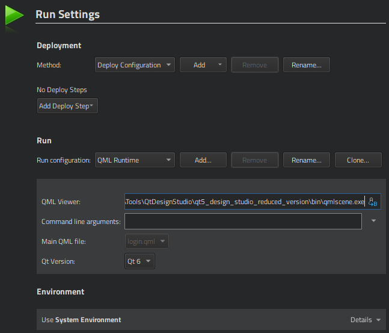

Previewing on Desktop
To preview the currently active QML file on the desktop:
- Select the Live Preview button on the top toolbar.
- Press Alt+P.

To preview any QML file that belongs to the project,
- Select the Live Preview button on the top toolbar.
- Right-click the filename in the Projects view, and select Preview File.
To preview the whole UI, select Live Preview when viewing the main QML file of the project.
To view the UI in different sizes, select the zooming level on the toolbar.
Selecting the Preview Tool
By default, the QML runtime is used for previewing. To use some other tool, specify it in the QML viewer field in the run settings of the project in the Projects mode.
Note: Click  to access the setting options.
to access the setting options.
